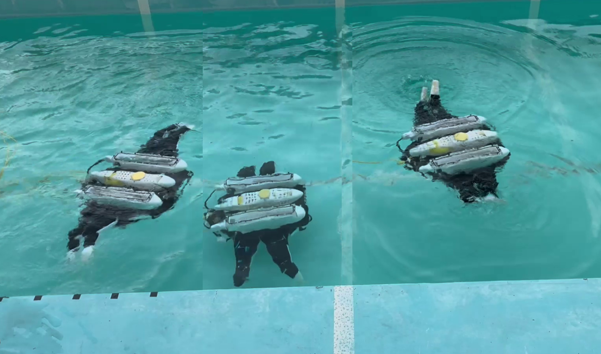

Utsunomiya University · Aichi Institute of Technology

Multimodal biomimetic underwater robots (BURs) combine swimming and legged locomotion for underwater exploration. Rule-based behavior selection limits new behavioral capabilities. We propose a mechanism and control system that expresses multimodal locomotion from the same multi-jointed structure: four leg-fins, each with four axes. A potential function generates nonlinear behavior from sensor modalities, enabling transitions between two or three behaviors.
Swimming, trot, walk, and crab-like gaits from one multi-jointed structure, using a two-layer CPG controller.
A potential function for multimodal locomotion control based on sensor modalities, not predefined rules.
Behavioral transitions verified under different initial conditions, with two or three behaviors, and under external disturbance.
Multimodal locomotion control for multi-jointed BURs was verified. Swimming, trot, walk, and crab-like gaits were generated by a two-layer CPG controller, and a potential function controlled multimodal expression. Behavioral transitions were achieved under different initial conditions and external disturbance.
@article{Asada2026Multimodal,
title = {Multimodal locomotion control of multi-jointed BURs with swimming and legged capabilities},
author = {Asada, Takumi and Furuhashi, Hideo and Tabata, Kenta and Miyagusuku, Renato and Ozaki, Koichi},
journal = {Advanced Robotics},
year = {2026},
doi = {10.1080/01691864.2026.2728312},
url = {https://www.tandfonline.com/doi/full/10.1080/01691864.2026.2728312}
}